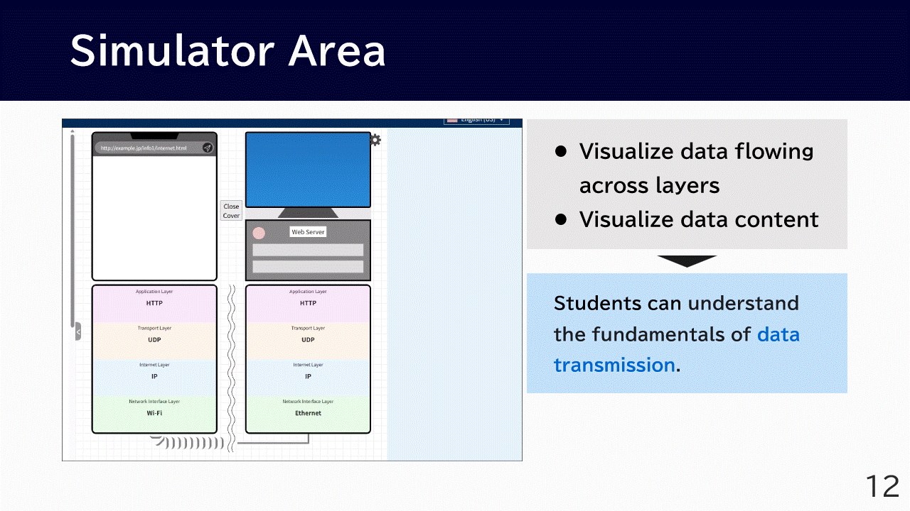
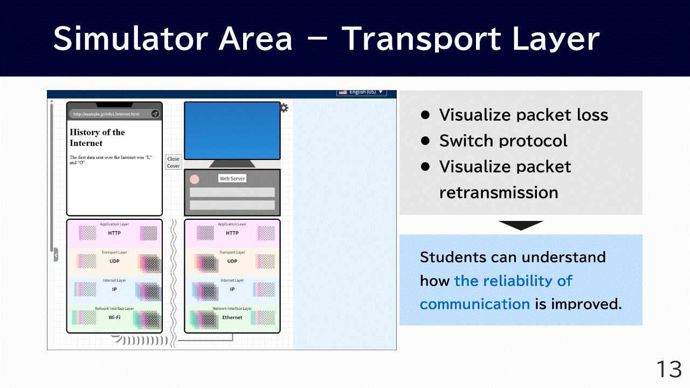
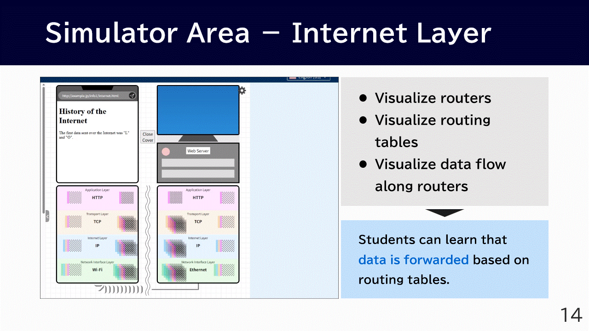
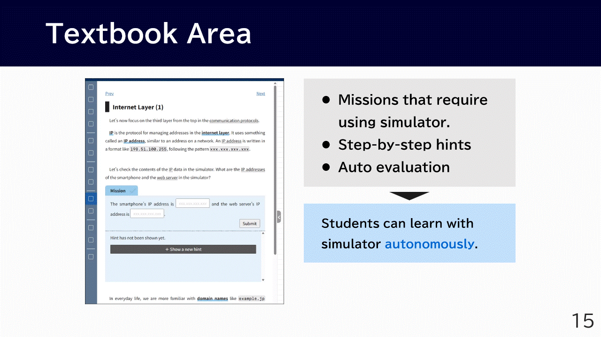
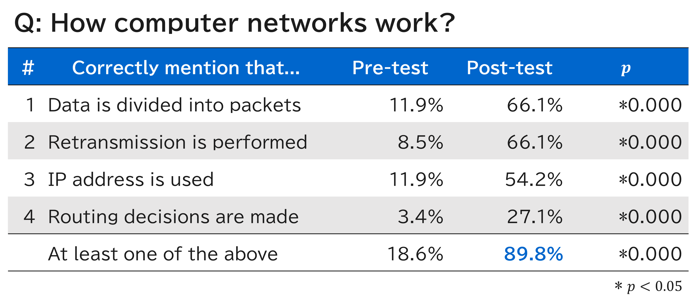

SIGCSE TS 2026
A Full Paper related to ProtoSim 2 has been accepted at SIGCSE TS 2026🎉
Yuki Kitamura, Tomonari Kishimoto, Hiroyuki Nagataki, Susumu Kanemune, and Shizuka Shirai. 2026. Enhancing Computer Network Education for High School Students with an Educational Simulator Visualizing Packet Retransmission and Routing. Proceedings of the 57th ACM Technical Symposium on Computer Science Education V.1. Association for Computing Machinery, New York, NY, USA, 575–581. https://doi.org/10.1145/3770762.3772590
Try ProtoSim 2
You can access ProtoSim 2 from here!
Paper Overview
Research Objective
To develop a simulator-based material for high-school students to learn network mechanisms in a short time.
High-school classes have limited instructional time. As a result, existing tools cannot be mastered by high-school students. We need learning materials that are perfectly suited to high school education.
We set four concrete learning objectives:
- Data is divided into packets.
- Retransmission control is triggered when packet loss occurs.
- A communication target is specified using an IP address.
- The route is determined via routers with routing methods.
Design of ProtoSim 2

The right side of the screen is the Simulator Area to concretely visualize the key properties of network mechanisms. The left side is the Textbook Area, which offers autonomous learning supports.

- In the simulator area, students can watch an animation showing data flowing across the four layers of TCP/IP protocol suite.
- By clicking on the traces of the transmitted data, they can also check the contents inside the data.

- When packet loss is enabled, one of the packets explodes during transmission.
- To address this, students can switch the transport layer protocol from UDP to TCP.
- Even with TCP, packet loss still occurs, but the lost packet is retransmitted.

- When students click the wavy line between the smartphone and the web server, omitted routers are revealed.
- By hovering the mouse over the router, students can also inspect its routing table.
- When the URL is entered again in this state, students can watch an animation showing data being forwarded along the routers.

- In the Textbook Area, students are given missions to use the simulator.
- Step-by-step hints are provided for each mission.
- The system automatically judges whether the student's answer is correct or incorrect.
Key Results
To evaluate ProtoSim, an educational practice was conducted in actual high school classes in Japan.

- In the pre- and post-tests, students wrote down what they knew about how computer networks work.
- This table shows a classification of the types of content included in their responses, based on four learning objectives.
- Nearly 90 percent of the students were able to correctly describe some aspect of the network mechanisms they had learned in the class.
Presentation
- From 11:20 AM, Fri 20 Feb
- Presented in "Visualization and Simulation" session at Meeting Room 105
📢 We look forward to seeing many of you at our presentation!
Proceeding
Yuki Kitamura, Tomonari Kishimoto, Hiroyuki Nagataki, Susumu Kanemune, and Shizuka Shirai. 2026. Enhancing Computer Network Education for High School Students with an Educational Simulator Visualizing Packet Retransmission and Routing. Proceedings of the 57th ACM Technical Symposium on Computer Science Education V.1. Association for Computing Machinery, New York, NY, USA, 575–581. https://doi.org/10.1145/3770762.3772590
- DOI: https://doi.org/10.1145/3770762.3772590
- PDF: https://dl.acm.org/doi/pdf/10.1145/3770762.3772590?download=true
BibTex
@inbook{10.1145/3770762.3772590,
author = {Kitamura, Yuki and Kishimoto, Tomonari and Nagataki, Hiroyuki and Kanemune, Susumu and Shirai, Shizuka},
title = {Enhancing Computer Network Education for High School Students with an Educational Simulator Visualizing Packet Retransmission and Routing},
year = {2026},
isbn = {9798400722561},
publisher = {Association for Computing Machinery},
address = {New York, NY, USA},
url = {https://doi.org/10.1145/3770762.3772590},
booktitle = {Proceedings of the 57th ACM Technical Symposium on Computer Science Education V.1},
pages = {575–581},
numpages = {7}
}